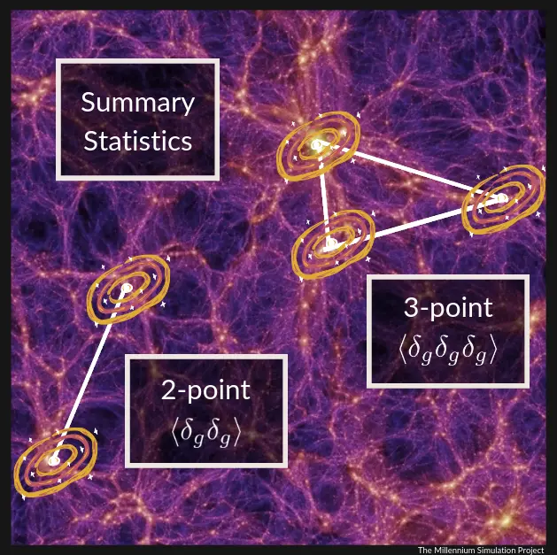

Full Shape Analysis

Background
When we map the distribution of galaxies in the universe, the most natural statistical summary is the power spectrum $P(k)$, which measures the amplitude of clustering as a function of spatial scale $k$. The sharpest cosmological signal in $P(k)$ is the BAO peak, and most analyses focus exclusively on measuring that peak's position as a standard ruler. But there is a lot more information in the full shape of the power spectrum (in the overall slope, the precise positions of oscillations, and the amplitude of clustering on different scales) that most analyses simply leave unused.
"Full shape" analysis aims to extract all of this information simultaneously. The challenge is theoretical: on small scales, galaxies are biased tracers of the underlying dark matter, and gravitational nonlinearities as well as galaxy bias effects must be modelled carefully. The modern framework for doing this is Effective Field Theory (EFT) of Large Scale Structure, which treats the small-scale physics as perturbative corrections parametrised by a few "nuisance" parameters. This allows tight constraints on the cosmological parameters $\Omega_m$, $H_0$, and $\sigma_8$ from a single dataset.
Going further, the bispectrum $B(k_1, k_2, k_3)$ is the three-point clustering statistic, capturing correlations between galaxy triplets that the power spectrum is blind to. The bispectrum contains significant additional information, especially for breaking degeneracies (such as between the linear growth rate $f$ and the clustering amplitude $\sigma_8$) that limit two-point analyses.
My Work
I co-developed FolpsD with Alejandro Aviles and Hernan Noriega. The pipeline performs joint Power Spectrum and Bispectrum fits on galaxy clustering data and is implemented in desilike, DESI's cosmological inference framework. FolpsD extends the EFT galaxy power spectrum (from the FOLPS code) with a tree-level bispectrum projected onto the tripolar spherical harmonic basis, enabling a simultaneous fit to both two- and three-point statistics in a single likelihood.
A key innovation is the inclusion of a line-of-sight damping factor in both statistics, a phenomenological correction that models the suppression of clustering at small scales due to non-linear redshift-space effects. This extends the range of scales that can be reliably used in the fit, recovering more information without sacrificing model accuracy. Even without damping, the joint $P(k) + B$ analysis significantly improves cosmological constraints and breaks degeneracies (e.g. between $f$ and $\sigma_8$) compared to power-spectrum-only fits. The pipeline has been tested and validated on DESI DR2 galaxy mocks and has been chosen as the official pipeline for DESI DR2 FS Key Papers.